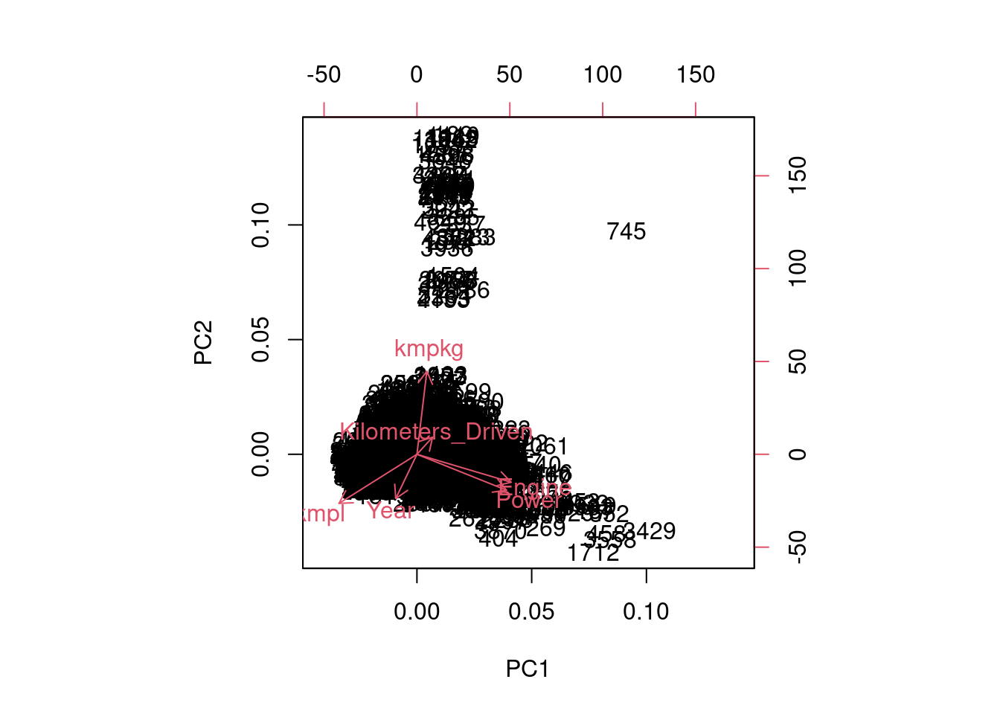

2 Análisis no supervisado
En primer lugar, comenzaremos viendo los algoritmos de aprendizaje no supervisado.
2.1 Análisis de componentes principales
El análisis de componentes principales (en inglés, PCA) es una técnica utilizada para describir un conjunto de datos en términos de nuevas variables denominadas componentes no correlacionadas. Estas nuevas componentes se construyen a partir de las variables existentes, eso sí, debemos asegurarnos de que las variables utilizadas en PCA sean variables cuantitativas (no podemos usar variables cualitativas ni categóricas). Con esta técnica se pretende reducir la dimensionalidad del problema en cuestión.
str(data)## 'data.frame': 4711 obs. of 15 variables:
## $ Name : Factor w/ 1636 levels "Ambassador Classic Nova Diesel",..: 37 72 501 1103 443 221 1073 1248 290 121 ...
## $ Location : Factor w/ 11 levels "Ahmedabad","Bangalore",..: 10 10 3 8 11 5 10 4 10 3 ...
## $ Year : int 2015 2014 2016 2009 2005 2016 2016 2017 2011 2012 ...
## $ Kilometers_Driven: int 48000 18600 18000 80464 123200 46727 17000 30090 32000 115000 ...
## $ Fuel_Type : Factor w/ 4 levels "CNG","Diesel",..: 2 2 4 2 4 2 4 2 4 2 ...
## $ Transmission : Factor w/ 2 levels "Automatic","Manual": 1 1 1 1 2 2 1 1 2 1 ...
## $ Owner_Type : Factor w/ 4 levels "First","Second",..: 1 2 1 2 2 1 1 1 2 3 ...
## $ Engine : int 1968 1995 1197 2987 1495 1498 1595 1461 1196 1995 ...
## $ Power : num 174 190 82 198 94 ...
## $ Seats : Factor w/ 8 levels "2","4","5","6",..: 3 3 3 3 3 3 3 3 3 3 ...
## $ Price : num 18.25 21 5.4 9.29 1 ...
## $ Make : Factor w/ 28 levels "Ambassador","Audi",..: 2 4 11 18 11 9 18 23 9 4 ...
## $ Gama : chr "Gama alta" "Gama alta" "Gama media" "Gama alta" ...
## $ kmpl : num 15.7 22.7 18.9 11 13.2 ...
## $ kmpkg : num 0 0 0 0 0 0 0 0 0 0 ...#data
corrplot(cor(data[, c(3,4, 8, 9, 14, 15)]), method = "ellipse") corPlot(data[, c(3,4, 8, 9, 14, 15)], cex = 1.2, main = "Matriz de correlación")
corrplot(cor(data[, c(3,4, 8, 9, 14, 15)]),method = "circle", order = "hclust", hclust.method = "ward.D",
addrect =2,rect.col = 3,rect.lwd = 3) 
cortest(cor(data[, c(3,4, 8, 9, 14, 15)]))## Tests of correlation matrices
## Call:cortest(R1 = cor(data[, c(3, 4, 8, 9, 14, 15)]))
## Chi Square value 250.68 with df = 15 with probability < 9e-45Tenemos evidencias para decir que las correlaciones son distintas de 0.
pca1 <- prcomp(data[, c(3,4, 8, 9, 14, 15)])plot(pca1)summary(pca1)## Importance of components:
## PC1 PC2 PC3 PC4 PC5 PC6
## Standard deviation 101058 600.56073 27.03 4.409 3.046 1.968
## Proportion of Variance 1 0.00004 0.00 0.000 0.000 0.000
## Cumulative Proportion 1 1.00000 1.00 1.000 1.000 1.000En nuestro conjunto de datos inicial, todas nuestras variables eran cuantitativas (menos la variable respuesta, que no utilizamos en aprendizaje no supervisado), sin embargo, las variables categorizadas que hemos creado no lo son. Así que haremos el análisis de componentes principales escalando las variables: Kilometers_Driven, Power, kmpl y kmpg.
pca2 <- prcomp(data[, c(3,4, 8, 9, 14, 15)], scale=T)
pca2## Standard deviations (1, .., p=6):
## [1] 1.5099667 1.1444561 1.0599891 0.9273837 0.5500460 0.3522111
##
## Rotation (n x k) = (6 x 6):
## PC1 PC2 PC3 PC4 PC5
## Year -0.13713864 -0.3782024 0.596223411 0.63439205 0.28287926
## Kilometers_Driven 0.10115280 0.1465697 -0.668955170 0.71929106 0.04377908
## Engine 0.61114224 -0.2395341 0.007784461 0.01713324 -0.11602069
## Power 0.58101040 -0.3074207 0.085329519 0.04975366 -0.38891068
## kmpl -0.50571711 -0.4201464 -0.135355634 0.08348424 -0.71719694
## kmpkg 0.06436916 0.7120907 0.413948973 0.26538370 -0.48885474
## PC6
## Year -0.01412815
## Kilometers_Driven 0.03857703
## Engine -0.74519368
## Power 0.63789605
## kmpl -0.16752599
## kmpkg -0.08956703Aquí arriba, podemos ver los diferentes pesos que otorga el análisis de componentes principales a cada una de las variables iniciales escaladas. Por ejemplo: en la primera componente principal (PC1), vemos que sobre todo se enfrentan las variables Engine y Power contra kmpl; en la segunda componente principal (PC2), vemos que se enfrenta la variable kmpg contra kmpl, Power,Year y Engine; en la tercera componente principal (PC3) se enfrentan los kilómetros que lleva recorridos el coche contra el año de fabricación y la variable kmpkg.
summary(pca2)## Importance of components:
## PC1 PC2 PC3 PC4 PC5 PC6
## Standard deviation 1.51 1.1445 1.0600 0.9274 0.55005 0.35221
## Proportion of Variance 0.38 0.2183 0.1873 0.1433 0.05043 0.02068
## Cumulative Proportion 0.38 0.5983 0.7856 0.9289 0.97932 1.00000La inercia de las primeras dimensiones muestra si existen relaciones fuertes entre las variables y sugiere el número de dimensiones que se deben estudiar.
Las dos primeras dimensiones de análisis expresan el 59,83% de la inercia total del conjunto de datos; eso quiere decir que el 59.83% de los individuos (o variables) nublan la variabilidad total que es explicada por el plano. Este porcentaje es relativamente alto y, por lo tanto, el primer plano representa bien la variabilidad de los datos. Este valor es muy superior al valor de referencia que equivale al 34,95%, por lo que la variabilidad explicada por este plano es muy significativa (el valor de referencia es el cuantil 0,95 de la distribución de porcentajes de inercia obtenida simulando 1689 tablas de datos de tamaño equivalente sobre la base de una distribución normal).
A partir de estas observaciones, conviene interpretar también las dimensiones mayores o iguales a la tercera.
Sin embargo, aquí resulta difícil ver algo claro e intuitivo, así que haremos un pequeño resumen y un gráfico multivariante para mostrar la información más relevante del PCA. Se estudia el plano 1:2.
PC1= pca2[[2]][,1]
PC2= pca2[[2]][,2]
PC3= pca2[[2]][,3]
PC4= pca2[[2]][,4]
componentes_princ <- cbind(PC1,PC2,PC3,PC4)
componentes_princ## PC1 PC2 PC3 PC4
## Year -0.13713864 -0.3782024 0.596223411 0.63439205
## Kilometers_Driven 0.10115280 0.1465697 -0.668955170 0.71929106
## Engine 0.61114224 -0.2395341 0.007784461 0.01713324
## Power 0.58101040 -0.3074207 0.085329519 0.04975366
## kmpl -0.50571711 -0.4201464 -0.135355634 0.08348424
## kmpkg 0.06436916 0.7120907 0.413948973 0.26538370plot(pca2)
biplot(pca2)
s.corcircle(componentes_princ[,-3], sub="PC1 Y PC2")
En el gráfico enfrentamos la primera y la segunda componente principal, y vemos como influyen cada una de las variables en los coches. Por ejemplo, el coche 1712, debe tener unos valores muy altos de Power y Engine que son las variables que “más tiran hacia la derecha”, y el coche 745, según el biplot debe tener un valor muy alto de kilometers_driven, que es la variable que “más tira en esa dirección”. Si recordamos lo analizado previamente, en la sección del análisis exploratorio de datos, este coche ya destacó por tener valores un tanto diferentes a los del resto por su desmesurado valor de kilómetros recorridos. Comprobamos que la información que nos proporciona el gráfico es totalmente coherente con lo que obtuvimos en el EDA.
La dimensión 1 opone individuos caracterizados por una coordenada fuertemente positiva en el eje (a la derecha del gráfico) a individuos caracterizados por una coordenada fuertemente negativa en el eje (a la izquierda del gráfico).
El grupo 1 (caracterizado por una coordenada positiva en el eje) comparte:
- valores altos para la variable kmpkg.
- valores bajos para las variables kmpl, Potencia y Motor (las variables se ordenan de la más débil).
El grupo 2 (caracterizado por una coordenada positiva en el eje) comparte:
- valores altos para las variables Motor, Potencia y Kilómetros_Recorridos (las variables se ordenan de la más fuerte).
- valores bajos para las variables kmpl, Year y kmpkg (las variables se ordenan de la más débil).
El grupo 3 (caracterizado por una coordenada negativa en el eje) comparte:
- valores altos para las variables kmpl y Año (las variables se ordenan de la más fuerte).
- valores bajos para las variables Motor, Potencia, Kilómetros_Conducidos y kmpkg (las variables se ordenan de menor a mayor).
La dimensión 2 opone individuos caracterizados por una coordenada fuertemente positiva en el eje (en la parte superior del gráfico) a individuos caracterizados por una coordenada fuertemente negativa en el eje (en la parte inferior del gráfico).
El grupo 1 (caracterizado por una coordenada positiva en el eje) comparte:
- valores altos para las variables kmpl y Año (las variables se ordenan de la más fuerte).
- valores bajos para las variables Motor, Potencia, Kilómetros_Conducidos y kmpkg (las variables se ordenan de menor a mayor).
El grupo 2 (caracterizado por una coordenada positiva en el eje) comparte:
- valores altos para las variables Motor, Potencia y Kilómetros_Recorridos (las variables se ordenan de la más fuerte).
- valores bajos para las variables kmpl, Year y kmpkg (las variables se ordenan de la más débil).
El grupo 3 (caracterizado por una coordenada negativa en el eje) comparte:
- valores altos para la variable kmpkg.
- valores bajos para las variables kmpl, Potencia y Motor (las variables se ordenan de la más débil).
fviz_pca_var(pca2,axes = c(1,2), col.var = "cos2", alpha.var = "contrib" ) + theme_grey()fviz_pca_var(pca2,axes = c(1,3), col.var = "cos2", alpha.var = "contrib" ) + theme_grey()La suma de cos2 de una variable determinada sobre cada factor es 1. Esto significa que cada vector debería estar tocando el perímetro de la circunferencia unidad, pero no lo está haciendo ninguna prácticamente, ¿por qué?. Si observamos por ejemplo la variable Engine(al igual que Power), vemos que está muy cerca de tocar dicho perímetro, su proyección sobre las dimensiones 1 y 2 (componentes) indica su contribución a éstas, pero aún le falta algo de contribución que debe estar repartida por otra u otras dimensiones. Si está variable solo tuviese peso sobre las dos primeras dimensiones estaría tocando la circunferencia.
Podemos colorear las observaciones según alguna variable. Además podemos hacer que las variables que más contribuyen en este plano factorial, se resalten más que las que menos influencia tienen. También tenemos la posibilidad de dibujar elipses alrededor de cada grupo con un cierto nivel de confianza.
Como se aprecia en los gráficos anteriores, no tiene mucho sentido representar la segunda componente principal ya que no realiza un correcto enfrentamiento de variables y no nos aporta nada.
summary(pca2)## Importance of components:
## PC1 PC2 PC3 PC4 PC5 PC6
## Standard deviation 1.51 1.1445 1.0600 0.9274 0.55005 0.35221
## Proportion of Variance 0.38 0.2183 0.1873 0.1433 0.05043 0.02068
## Cumulative Proportion 0.38 0.5983 0.7856 0.9289 0.97932 1.00000Por otro lado, podemos decir que lo que más nos interesa de este resumen es la proporción de la varianza total que consigue explicar cada componente principal. Según el resumen que acabamos de mostrar arriba, vemos que la varianza total explicada no aumenta mucho a partir de la tercera o cuarta componente principal (y que con todas las componentes principales, evidentemente, la varianza explicada es el 100%). Para visualizar esto haremos un gráfico de barras:
screeplot(pca2, xlab="PCs")
Una estimación del número correcto de ejes a interpretar sugiere restringir el análisis a la descripción de los 3 primeros ejes. Estos ejes presentan una inercia superior a las obtenidas por el cuantil 0,95 de las distribuciones aleatorias (78,56% frente a 51,79%). Esta observación sugiere que solo estos ejes llevan una información real. En consecuencia, la descripción se situará en estos ejes.
scree(data[, c(3,4, 8, 9, 14, 15)],main ="Grafico_de_Sedimentacion")
El grafico de sedimentación nos muestra la cantidad óptima de componentes a tomar en el análisis, siendo los valores por encima de la linea de 1.0 los más aceptables.
fa.parallel(data[, c(3,4, 8, 9, 14, 15)],fa="pc")
## Parallel analysis suggests that the number of factors = NA and the number of components = 3Según los resultados del análisis paralelo, el número de componentes deberá ser 3.
Se comprueba que con PCA no se consigue lo que se busca, ni PC2 ni PC3 nos sirven para realizar una correcta redimensión de los datos. Nos damos cuenta de que nuestro problema es bastante difícil de resolver, dado que es complicado ver algún tipo de separación o tendencia de los coches en función de las variables explicativas o incluso en cuanto al precio. Aún así, si nos fijamos, en los gráficos que enfrentan PC1 con PC2, PC1 con PC3 y PC2 con PC3, parece que los coches de gama media y gama alta están más dispersos que los de gama baja.
2.2 k-medias. Análisis cluster no jerárquico o de conglomerados (clustering)
El análisis cluster busca agrupar individuos u observaciones tratando de lograr la máxima homogeneidad en cada grupo o cluster y la mayor diferencia entre los grupos. Es decir, el clustering asigna individuos similares al mismo grupo, y observaciones muy distintas estarán en grupos diferentes. Nosotros usaremos el algoritmo de las k-medias que tiene como objetivo encontrar y agrupar en clases a las observaciones que tienen una alta similitud entre ellos. Esta similitud se define como la menor distancia entre características de cada observación. Cuanto más cerca estén los puntos de datos, más similares serán y más probabilidad habrá de que pertenezcan al mismo cluster. Para ello, primero debemos escoger una distancia y dado que nuestra variable respuesta está bastante bien balanceada, usaremos la distancia euclídea. Esta es la distancia que muchos métodos de R utilizan por defecto, pero debemos asegurarnos de que los datos que introducimos en el algoritmo están escalados (para que no tengan mayor importancia las variables con números más grandes en valor absoluto, por el mero de hecho de que puedan estar medidas en diferentes unidades, por ejemplo). Así y para trabajar sobre una variable respuesta binaria, transformamos la variable Gama.
data <- data[,-13]
data %>%
mutate(
Gama = case_when(
data$Make=="Datsun" |data$Make=="Smart" |data$Make=="Tata" |data$Make=="Fiat" |data$Make=="Chevrolet" |data$Make=="Ambassador" |
data$Make=="Skoda"|data$Make=="Renault" |data$Make=="Ford" |data$Make=="Honda"|data$Make=="Volkswagen" |data$Make=="Hyundai" |data$Make=="Nissan" |data$Make=="Maruti" ~ "Baja-media",
data$Make=="Bentley"|data$Make=="Porsche" |data$Make=="Land Rover" |data$Make=="Jaguar" |data$Make=="Mini" |data$Make=="Mercedes-Benz" |data$Make=="Audi" |data$Make=="Bmw" |data$Make=="Jeep" |data$Make=="Volvo" |data$Make=="Isuzu" |data$Make=="Mitsubishi" |data$Make=="Toyota" |data$Make=="Force" |data$Make=="Mahindra"~ "Alta"
)
) -> data
data$Gama <- as.factor(data$Gama)
#dataTest %>% dplyr::select(-Mileage) -> dataTest
dataTest %>% dplyr::select(-X) -> dataTest
head(dataTest)## Name Location Year Kilometers_Driven Fuel_Type
## 1 Honda Jazz V Chennai 2011 46000 Petrol
## 2 Maruti Ertiga VDI Chennai 2012 87000 Diesel
## 3 Volkswagen Vento Diesel Comfortline Pune 2013 64430 Diesel
## 4 Maruti Ciaz Zeta Kochi 2018 25692 Petrol
## 5 Land Rover Range Rover 2.2L Pure Delhi 2014 72000 Diesel
## 6 Land Rover Freelander 2 TD4 SE Pune 2012 85000 Diesel
## Transmission Owner_Type Mileage Engine Power Seats Price Make
## 1 Manual First 18.20 1199 88.70 5 4.50 Honda
## 2 Manual First 20.77 1248 88.76 7 6.00 Maruti
## 3 Manual First 20.54 1598 103.60 5 5.20 Volkswagen
## 4 Manual First 21.56 1462 103.25 5 9.95 Maruti
## 5 Automatic First 12.70 2179 187.70 5 27.00 Land Rover
## 6 Automatic Second 0.00 2179 115.00 5 17.50 Land Rover
## Gama
## 1 Gama media
## 2 Gama media
## 3 Gama media
## 4 Gama media
## 5 Gama alta
## 6 Gama altadataTest%>%drop_na() -> dataTest
dataTest %>%
mutate(kmpl = ifelse(Fuel_Type=="Diesel" | Fuel_Type=="Petrol", Mileage, 0)) %>%
mutate(kmpkg = ifelse(Fuel_Type=="CNG" | Fuel_Type=="LPG", Mileage, 0)) %>%
dplyr::select(-Mileage) -> dataTest
dataTest %>%
mutate(
Gama = case_when(
dataTest$Make=="Datsun" |dataTest$Make=="Smart" |dataTest$Make=="Tata" |dataTest$Make=="Fiat" |dataTest$Make=="Chevrolet" |dataTest$Make=="Ambassador" |
dataTest$Make=="Skoda"|dataTest$Make=="Renault" |dataTest$Make=="Ford" |dataTest$Make=="Honda"|dataTest$Make=="Volkswagen" |dataTest$Make=="Hyundai" |dataTest$Make=="Nissan" |dataTest$Make=="Maruti" ~ "Baja-media",
dataTest$Make=="Bentley"|dataTest$Make=="Porsche" |dataTest$Make=="Land Rover" |dataTest$Make=="Jaguar" |dataTest$Make=="Mini" |dataTest$Make=="Mercedes-Benz" |dataTest$Make=="Audi" |dataTest$Make=="Bmw" |dataTest$Make=="Jeep" |dataTest$Make=="Volvo" |dataTest$Make=="Isuzu" |dataTest$Make=="Mitsubishi" |dataTest$Make=="Toyota" |dataTest$Make=="Force" |dataTest$Make=="Mahindra"~ "Alta"
)
) -> dataTestTrainEscalado <- data %>% dplyr::select(Year, Kilometers_Driven, Engine, Power, Price, kmpl) %>% scale() %>% as.data.frame()Como mínimo haremos dos grupos, es decir, buscaremos hacer 2 o más grupos, porque hacer un único cluster no tiene ningún sentido, ya que buscamos separar los coches en una característica que toma dos valores: gama baja-media y gama alta.
Para decidir el número óptimo de grupos que debemos crear, podemos usar la función NbClust de R, que nos devuelve cuál es (según unos criterios) el mejor número de clusters para el algoritmo de k-medias o bien, podemos ir probando con diferentes valores y decidir nosotros en función de la información que recabemos.
Primero usaremos la función, teniendo en cuenta que como máximo aceptaremos tener 10 grupos y como mínimo 2:
set.seed(220322)
nc = NbClust(TrainEscalado,min.nc=2,max.nc=10,method = "kmeans")
## *** : The Hubert index is a graphical method of determining the number of clusters.
## In the plot of Hubert index, we seek a significant knee that corresponds to a
## significant increase of the value of the measure i.e the significant peak in Hubert
## index second differences plot.
## 
## *** : The D index is a graphical method of determining the number of clusters.
## In the plot of D index, we seek a significant knee (the significant peak in Dindex
## second differences plot) that corresponds to a significant increase of the value of
## the measure.
##
## *******************************************************************
## * Among all indices:
## * 8 proposed 2 as the best number of clusters
## * 3 proposed 3 as the best number of clusters
## * 2 proposed 8 as the best number of clusters
## * 11 proposed 9 as the best number of clusters
##
## ***** Conclusion *****
##
## * According to the majority rule, the best number of clusters is 9
##
##
## *******************************************************************nc## $All.index
## KL CH Hartigan CCC Scott Marriot TrCovW
## 2 3.7372 2231.534 938.0726 -7.7989 5734.242 6.840925e+20 12493090
## 3 1.4122 1806.690 654.6000 -13.6059 9122.307 7.498264e+20 8370406
## 4 2.5713 1589.790 295.5897 -16.5777 13311.058 5.478838e+20 7359205
## 5 0.4411 1340.832 451.3764 -24.2826 15058.326 5.907891e+20 6585463
## 6 31.6152 1265.556 252.9865 -20.4498 16951.813 5.691667e+20 5176556
## 7 0.0315 1153.257 373.6215 -21.5790 18661.448 5.389226e+20 5009361
## 8 0.0906 1120.156 2916.5901 -17.5170 21486.427 3.864409e+20 4580569
## 9 93.9316 1952.131 139.3206 49.7614 32381.793 4.841428e+19 1449588
## 10 0.7282 1801.739 191.4079 46.5489 33128.923 5.100497e+19 1414613
## TraceW Friedman Rubin Cindex DB Silhouette Duda Pseudot2 Beale
## 2 19173.790 8.5627 1.4739 0.0321 1.4470 0.4073 1.4789 -1208.2390 -1.2455
## 3 15988.705 9.7096 1.7675 0.0276 1.6252 0.3259 3.1466 -2281.9631 -2.6236
## 4 14037.001 13.5177 2.0133 0.0255 1.5512 0.3112 0.9610 100.4054 0.1562
## 5 13207.592 14.5017 2.1397 0.0249 1.6094 0.2273 1.6048 -815.8979 -1.4488
## 6 12051.656 15.4810 2.3449 0.0227 1.6606 0.2457 5.9409 -1353.1340 -3.1972
## 7 11436.708 17.0108 2.4710 0.0218 1.6345 0.2414 1.3219 -324.8093 -0.9358
## 8 10595.172 19.2072 2.6673 0.0210 1.5048 0.2557 2.3430 -772.6783 -2.1987
## 9 6539.603 29.1104 4.3214 0.0918 1.0827 0.2592 4.0564 -1253.0320 -2.8901
## 10 6351.410 29.9539 4.4494 0.0913 1.1398 0.2464 0.7969 190.8494 0.9793
## Ratkowsky Ball Ptbiserial Frey McClain Dunn Hubert SDindex Dindex
## 2 0.3323 9586.8949 0.4224 1.2264 0.4052 0.0012 1e-04 7.2473 1.5510
## 3 0.3600 5329.5683 0.4000 0.4116 0.8271 0.0016 1e-04 6.4723 1.3943
## 4 0.3326 3509.2502 0.4068 6.3164 0.9695 0.0007 1e-04 6.5693 1.2853
## 5 0.3074 2641.5184 0.3209 0.1855 1.7394 0.0011 1e-04 6.3678 1.2076
## 6 0.2932 2008.6094 0.3262 0.6156 1.9272 0.0003 1e-04 6.9963 1.1306
## 7 0.2772 1633.8154 0.3134 -0.0940 2.2187 0.0008 1e-04 6.6163 1.0874
## 8 0.2657 1324.3965 0.3223 -0.2051 2.1732 0.0008 1e-04 5.8757 1.0428
## 9 0.2920 726.6226 0.3274 4.3783 2.1327 0.0030 1e-04 6.6319 1.0283
## 10 0.2782 635.1410 0.3096 9.4740 2.4212 0.0030 1e-04 8.2962 1.0060
## SDbw
## 2 1.3879
## 3 1.3910
## 4 1.1600
## 5 0.9978
## 6 1.0421
## 7 1.0252
## 8 0.8578
## 9 0.4463
## 10 0.7642
##
## $All.CriticalValues
## CritValue_Duda CritValue_PseudoT2 Fvalue_Beale
## 2 0.8638 588.2681 1.0000
## 3 0.8590 549.0712 1.0000
## 4 0.8575 410.6496 0.9879
## 5 0.8469 391.3096 1.0000
## 6 0.8456 297.1056 1.0000
## 7 0.8384 257.0461 1.0000
## 8 0.7997 337.5479 1.0000
## 9 0.7996 416.7944 1.0000
## 10 0.8391 143.6584 0.4373
##
## $Best.nc
## KL CH Hartigan CCC Scott Marriot TrCovW
## Number_clusters 9.0000 2.000 9.000 9.0000 9.00 9.000000e+00 3
## Value_Index 93.9316 2231.534 2777.269 49.7614 10895.37 3.406173e+20 4122684
## TraceW Friedman Rubin Cindex DB Silhouette Duda
## Number_clusters 9.000 9.0000 9.0000 8.000 9.0000 2.0000 2.0000
## Value_Index 3867.376 9.9032 -1.5261 0.021 1.0827 0.4073 1.4789
## PseudoT2 Beale Ratkowsky Ball PtBiserial Frey McClain
## Number_clusters 2.000 2.0000 3.00 3.000 2.0000 2.0000 2.0000
## Value_Index -1208.239 -1.2455 0.36 4257.327 0.4224 1.2264 0.4052
## Dunn Hubert SDindex Dindex SDbw
## Number_clusters 9.000 0 8.0000 0 9.0000
## Value_Index 0.003 0 5.8757 0 0.4463
##
## $Best.partition
## [1] 4 4 9 7 1 5 9 9 6 7 4 9 1 5 7 9 6 6 4 1 7 6 5 9 7 1 9 5 1 9 9 1 9 9 9 2 5
## [38] 4 7 7 9 4 6 2 1 7 2 6 6 6 4 4 9 6 4 5 6 9 7 4 1 1 9 7 9 7 5 4 5 7 7 9 5 4
## [75] 6 7 5 6 4 6 6 6 5 6 9 6 9 4 6 4 6 9 7 9 4 5 9 9 6 5 5 6 4 9 4 6 7 5 9 5 5
## [112] 4 4 7 5 2 4 6 5 6 9 9 6 4 6 9 7 9 2 6 9 9 4 7 9 7 1 4 5 4 1 9 4 6 5 5 9 9
## [149] 6 1 7 9 6 7 7 9 9 4 6 7 4 1 6 7 4 1 4 9 6 5 4 9 9 7 4 4 1 4 1 9 5 6 1 5 6
## [186] 4 2 4 3 5 6 4 6 6 9 1 9 2 5 6 7 9 7 1 6 6 7 1 4 6 6 6 6 4 5 9 9 9 5 5 9 6
## [223] 1 9 9 4 2 6 4 6 9 9 3 6 5 9 1 7 4 9 7 7 6 4 5 6 7 9 5 7 9 7 4 6 7 5 5 9 2
## [260] 6 7 5 6 6 6 5 6 9 2 5 6 2 9 4 9 1 6 6 5 4 9 5 9 6 1 5 2 6 7 4 1 4 6 4 9 7
## [297] 5 9 6 1 9 6 6 1 9 5 6 4 6 6 1 9 5 4 6 1 9 9 5 7 5 2 4 7 5 6 5 1 9 6 7 7 9
## [334] 9 7 9 6 9 3 5 1 9 4 5 5 4 6 5 6 1 9 7 6 5 1 7 5 9 5 9 9 4 9 6 9 7 6 6 5 1
## [371] 4 4 1 7 3 5 9 9 5 7 2 7 6 1 7 5 7 5 5 6 6 4 5 5 5 7 9 5 6 9 9 9 6 2 7 7 2
## [408] 6 4 9 6 2 7 7 7 9 7 7 7 9 5 5 7 7 4 9 5 5 7 6 2 5 9 5 9 6 5 1 9 9 9 6 9 6
## [445] 4 5 7 6 6 5 6 9 7 6 5 5 6 2 7 1 9 6 9 6 5 7 4 4 9 4 4 5 6 7 5 6 4 6 6 4 1
## [482] 5 9 2 5 4 6 4 2 1 9 4 7 7 5 5 7 2 6 7 7 9 4 6 7 7 5 9 9 9 9 4 5 3 6 6 4 5
## [519] 7 7 6 9 5 9 4 5 9 7 7 6 9 7 5 6 6 9 6 2 5 5 4 4 4 7 7 5 9 5 7 1 6 2 9 6 4
## [556] 5 5 6 9 7 9 6 6 5 6 7 9 9 4 1 1 5 6 9 4 2 6 5 1 5 9 4 2 5 7 6 5 5 7 6 6 5
## [593] 9 5 6 5 6 5 9 3 2 9 5 4 9 5 5 6 4 6 7 5 9 6 4 6 4 6 6 9 4 4 6 6 9 6 2 7 6
## [630] 9 9 9 7 4 6 9 6 6 3 1 7 9 4 9 9 5 5 6 7 5 1 7 4 6 7 9 7 6 2 1 4 6 1 9 7 4
## [667] 2 5 2 6 9 5 2 9 6 4 4 5 5 6 1 9 5 5 5 6 5 5 4 7 6 1 9 4 4 5 6 5 6 7 5 9 1
## [704] 6 9 4 6 6 5 6 9 6 4 6 5 9 2 5 9 6 4 9 6 6 7 5 3 7 5 9 7 5 6 5 1 5 9 5 9 1
## [741] 9 6 4 7 8 4 4 7 9 7 9 6 3 9 9 6 5 6 5 1 7 1 4 9 5 5 9 6 5 4 6 5 7 9 9 6 6
## [778] 1 6 9 6 6 9 9 5 5 2 9 9 9 6 5 4 6 9 4 9 2 4 6 7 6 9 5 5 5 7 5 5 1 5 7 9 9
## [815] 9 2 7 6 5 5 4 6 6 2 9 1 9 6 5 9 6 6 9 4 5 6 6 6 5 7 5 9 5 4 6 9 9 6 5 9 5
## [852] 9 9 1 5 5 4 9 6 6 9 6 7 6 6 4 7 1 9 6 4 7 5 9 6 7 6 7 1 9 9 5 5 5 6 7 7 5
## [889] 6 4 7 9 4 4 6 2 1 1 5 7 5 5 9 5 9 4 9 1 7 7 6 5 6 6 7 7 7 6 5 4 4 9 5 7 9
## [926] 4 6 5 4 4 9 7 9 6 9 5 6 5 6 9 1 6 5 7 5 7 9 6 7 5 9 6 5 9 7 6 5 7 7 6 6 6
## [963] 9 7 4 4 5 5 6 4 5 9 9 6 5 5 9 5 4 5 4 6 7 9 7 4 9 6 5 7 7 5 7 3 6 7 4 6 9
## [1000] 7 2 5 7 4 5 5 4 9 5 9 7 1 7 7 1 9 9 6 6 9 9 9 6 9 5 4 6 2 7 5 9 6 6 5 5 6
## [1037] 6 5 7 9 5 1 9 9 7 5 6 7 2 5 6 6 4 9 6 4 9 6 2 9 1 9 6 7 6 9 6 6 5 1 3 9 9
## [1074] 7 7 6 7 5 1 5 9 6 6 9 6 4 9 7 5 6 6 7 6 6 6 1 6 1 3 7 9 4 2 5 7 9 9 6 6 3
## [1111] 9 7 5 9 9 7 9 9 4 5 9 6 9 1 6 5 9 9 6 1 7 4 6 7 7 1 5 6 6 7 5 6 6 1 1 9 9
## [1148] 5 5 6 9 6 7 5 6 4 1 7 9 6 9 9 6 6 7 7 7 9 9 9 9 6 6 1 1 6 6 9 9 9 5 5 3 4
## [1185] 5 7 9 9 3 2 1 5 5 5 9 4 7 9 1 9 6 2 4 5 4 9 6 9 1 5 5 1 9 9 4 5 4 6 4 9 2
## [1222] 6 7 1 9 7 5 6 6 5 6 2 4 5 2 6 1 5 9 6 4 6 4 4 3 6 5 9 7 6 7 1 4 6 6 6 6 7
## [1259] 7 5 9 5 6 2 1 9 9 9 1 5 9 9 5 3 1 4 6 9 7 3 6 1 9 6 4 6 6 6 5 9 4 6 4 4 7
## [1296] 1 2 7 9 7 9 5 9 5 5 1 5 5 6 9 5 5 9 5 9 5 5 5 1 6 9 1 6 1 7 9 4 5 9 6 6 5
## [1333] 4 5 5 7 5 7 4 1 1 7 5 6 9 5 9 9 5 6 6 6 7 9 5 6 6 6 5 4 5 4 9 5 7 6 7 4 9
## [1370] 4 4 9 7 6 6 6 7 7 9 1 6 9 5 2 9 1 1 9 7 9 9 7 5 9 4 4 1 9 1 7 1 4 4 6 7 5
## [1407] 4 5 7 7 5 7 6 9 7 1 9 7 6 6 7 9 9 9 5 4 1 6 9 6 7 4 9 9 6 6 3 9 9 5 7 4 9
## [1444] 5 6 2 5 7 9 7 9 7 7 9 6 7 9 4 6 6 9 2 5 5 6 5 5 9 2 1 9 1 5 7 5 4 7 9 4 2
## [1481] 1 9 5 1 5 9 6 6 9 9 7 6 3 4 5 3 6 5 6 4 6 5 5 3 4 6 7 6 9 2 9 9 6 6 9 4 7
## [1518] 5 5 6 5 7 5 9 4 9 7 7 6 9 6 7 6 6 7 7 9 5 6 7 6 6 5 1 5 1 7 9 7 9 9 1 7 6
## [1555] 1 6 6 5 5 5 7 1 5 9 1 9 7 7 1 6 9 5 9 5 5 2 2 6 7 4 9 6 5 6 3 5 6 9 9 9 7
## [1592] 6 4 5 2 6 6 9 5 4 9 1 7 6 9 4 4 4 6 1 9 5 6 6 2 1 7 6 9 4 9 9 9 9 9 9 7 1
## [1629] 5 2 4 9 1 5 6 6 9 6 4 9 5 9 5 9 9 5 6 5 5 6 6 9 5 6 6 5 9 4 2 9 6 5 5 1 6
## [1666] 4 5 4 7 6 5 4 1 9 7 6 4 6 9 7 5 6 7 7 9 9 9 1 5 6 9 2 9 6 7 9 7 6 7 6 6 6
## [1703] 6 7 4 6 9 5 6 9 6 2 5 2 9 4 4 9 6 6 7 1 4 1 5 7 6 5 5 6 6 4 5 4 9 7 9 5 5
## [1740] 7 4 6 6 7 9 7 5 9 4 2 6 3 9 5 7 7 5 7 5 5 2 9 9 4 7 5 4 5 9 6 6 9 4 1 9 9
## [1777] 5 6 9 7 5 4 3 9 9 5 1 4 6 6 9 9 4 5 1 9 4 2 4 6 9 7 7 9 7 6 5 2 9 5 9 6 7
## [1814] 9 5 9 5 5 5 6 7 9 9 1 4 4 5 4 1 4 5 1 7 1 7 6 5 7 7 5 6 6 4 9 7 6 4 6 4 5
## [1851] 4 9 9 9 6 1 9 5 4 7 1 4 9 5 9 1 6 9 4 5 6 6 9 1 6 9 9 5 9 4 9 6 5 6 7 9 2
## [1888] 1 7 6 6 7 1 6 9 5 5 9 4 4 7 9 6 9 5 9 6 9 6 6 6 4 4 3 4 6 7 4 6 1 7 7 4 6
## [1925] 9 6 6 6 7 7 9 1 2 4 1 5 2 9 6 3 1 6 4 6 7 4 6 6 7 6 5 2 4 9 6 3 4 4 4 5 6
## [1962] 6 2 1 4 7 9 1 7 7 4 4 7 6 9 9 5 7 9 5 4 4 5 4 4 1 6 5 5 9 6 6 9 7 7 4 7 7
## [1999] 9 6 4 9 5 4 4 6 6 6 5 9 5 5 7 9 7 9 6 4 6 6 1 5 9 1 9 6 9 5 6 9 6 4 4 9 4
## [2036] 7 6 9 9 9 6 7 6 6 9 9 9 1 1 7 6 4 6 9 4 5 6 9 9 5 7 4 6 9 9 6 6 4 4 6 4 7
## [2073] 4 7 9 4 3 5 6 4 4 4 4 7 6 9 9 5 2 5 5 5 9 5 4 9 6 9 9 5 4 7 4 6 6 5 7 9 9
## [2110] 6 3 6 5 9 6 5 6 9 5 5 6 5 4 4 6 6 7 7 9 9 6 7 9 5 9 9 5 4 7 6 5 5 5 6 2 6
## [2147] 1 5 9 7 7 5 7 6 9 2 5 7 4 4 1 4 1 6 9 6 9 9 9 5 4 9 9 6 6 5 2 6 4 2 5 7 9
## [2184] 1 9 3 1 4 5 2 1 4 6 1 7 9 7 5 6 5 9 1 7 5 9 4 4 1 6 7 4 5 1 6 6 7 1 5 9 6
## [2221] 4 7 7 9 7 5 9 9 5 9 9 6 4 6 7 6 7 7 7 6 6 6 9 4 4 6 6 5 6 6 6 4 5 1 5 9 9
## [2258] 5 9 5 6 7 9 5 9 9 7 5 9 1 4 6 9 1 4 6 9 6 7 6 7 9 5 7 7 7 5 4 1 7 7 6 9 7
## [2295] 6 2 4 6 5 5 1 5 6 7 4 9 6 4 9 6 6 7 9 9 4 5 6 9 7 4 9 4 7 9 9 7 9 6 9 5 6
## [2332] 2 5 9 5 4 3 6 9 6 9 3 7 6 7 5 5 4 1 6 5 6 4 6 6 6 9 9 5 4 4 5 3 9 4 5 6 9
## [2369] 5 5 6 4 9 4 5 5 5 5 4 9 4 2 7 7 6 5 6 4 5 4 1 5 7 6 6 4 7 7 6 9 9 9 6 1 5
## [2406] 6 9 6 9 6 6 5 1 7 9 7 9 9 3 3 6 9 6 5 4 5 9 6 5 6 1 4 1 6 4 9 9 7 9 9 9 7
## [2443] 6 9 9 7 7 5 6 5 6 4 5 9 6 1 9 5 1 5 7 9 1 9 7 7 1 4 7 1 4 4 5 5 6 4 4 9 7
## [2480] 6 2 6 6 5 6 6 7 3 7 4 7 9 5 6 9 4 9 2 7 7 9 7 5 7 4 9 7 5 6 6 9 6 6 5 5 5
## [2517] 5 4 6 6 6 6 3 7 5 6 5 9 6 5 1 7 5 9 7 4 9 7 4 7 6 4 7 4 1 9 9 5 7 9 9 6 4
## [2554] 4 4 5 6 9 5 4 6 5 9 6 5 9 7 7 9 4 4 5 4 7 9 2 6 6 2 1 6 9 7 5 9 7 4 5 5 6
## [2591] 4 6 5 5 7 4 9 4 6 6 9 9 7 1 5 7 9 6 5 5 5 7 7 5 2 7 7 9 7 7 9 9 7 9 6 7 6
## [2628] 7 1 1 9 4 5 9 9 7 5 5 9 9 9 6 6 5 5 6 4 6 4 5 1 5 4 5 9 6 7 5 6 2 6 6 6 6
## [2665] 9 6 6 7 9 9 1 5 6 7 9 4 5 9 6 9 7 4 5 6 4 6 6 5 6 5 5 9 5 6 9 6 6 6 5 6 9
## [2702] 1 7 2 1 4 4 6 4 4 9 5 4 5 9 7 6 7 5 1 5 2 9 6 1 4 1 6 6 9 6 6 6 1 6 4 9 6
## [2739] 1 9 4 5 2 9 5 9 9 4 9 3 7 9 7 5 7 6 5 5 5 7 9 5 6 9 6 1 6 2 4 6 6 5 7 6 1
## [2776] 4 1 4 2 5 7 9 4 6 4 6 5 2 9 4 9 6 6 5 6 2 2 9 9 6 9 3 7 9 7 4 7 5 6 5 2 5
## [2813] 9 9 6 2 6 9 6 9 5 9 4 6 9 5 6 1 6 4 9 5 6 5 1 7 6 9 6 7 5 7 7 9 2 9 4 1 9
## [2850] 9 4 7 7 7 5 9 7 5 1 5 9 5 9 5 6 5 7 6 7 5 9 7 4 9 4 6 7 5 7 9 6 4 7 6 7 6
## [2887] 9 6 5 7 4 7 5 9 7 9 9 9 6 7 3 6 6 9 5 6 9 4 7 9 9 5 9 6 4 9 5 6 5 4 5 5 3
## [2924] 4 6 7 7 9 6 9 1 9 9 9 5 7 4 6 1 4 6 6 9 7 2 4 9 7 5 2 5 4 5 5 6 4 4 7 9 9
## [2961] 5 1 1 9 7 5 5 5 4 7 6 6 5 7 1 5 1 6 6 7 5 6 6 1 4 5 4 9 6 4 9 9 4 6 9 9 7
## [2998] 2 7 9 9 9 9 7 2 5 9 5 9 5 9 4 5 7 7 6 1 5 5 1 7 5 6 5 4 1 2 4 5 7 9 7 6 9
## [3035] 4 7 7 4 4 1 5 5 4 7 4 6 7 9 4 7 7 6 7 9 1 6 6 7 6 5 7 5 7 1 5 7 9 1 6 1 4
## [3072] 6 3 9 2 7 9 9 6 5 9 5 1 9 7 9 6 4 7 6 9 7 5 9 7 5 5 6 2 6 5 5 7 5 9 1 7 4
## [3109] 5 7 6 6 4 7 4 7 7 9 9 6 5 7 7 9 6 4 5 5 9 1 6 7 9 7 6 7 9 5 9 9 9 4 1 4 9
## [3146] 1 6 6 6 7 1 5 6 6 9 6 1 6 7 9 9 9 9 5 4 5 6 7 7 1 6 9 4 4 4 7 9 1 6 6 6 5
## [3183] 9 7 4 9 4 1 7 6 5 5 5 7 6 9 4 9 9 9 5 9 9 6 6 4 6 3 7 7 7 9 5 1 4 9 4 9 6
## [3220] 1 5 4 7 7 9 9 5 6 6 4 4 6 7 5 5 9 5 9 4 6 1 3 1 4 4 2 2 5 9 5 9 4 7 6 1 4
## [3257] 1 6 6 9 9 7 6 3 4 7 7 4 4 9 7 5 5 4 4 9 7 9 1 5 4 6 3 5 3 6 6 9 9 4 4 4 5
## [3294] 5 4 5 9 1 7 6 7 2 6 1 5 9 5 9 4 9 5 1 5 9 1 7 1 7 9 7 5 7 7 9 6 4 4 6 5 5
## [3331] 6 7 4 7 7 4 5 9 7 9 7 9 7 6 9 9 1 7 9 5 5 5 9 7 6 1 6 4 7 6 6 5 7 4 6 6 9
## [3368] 5 1 5 9 5 4 5 9 1 5 7 9 6 6 9 4 7 9 2 7 6 4 2 1 7 7 7 7 2 9 9 9 5 5 1 4 4
## [3405] 4 1 9 5 9 6 6 5 5 7 1 6 7 9 4 9 5 7 9 5 6 6 6 7 2 6 5 9 9 1 6 7 2 9 9 7 6
## [3442] 5 7 6 7 5 5 7 4 7 4 4 7 7 3 4 9 1 4 5 7 9 9 6 4 4 5 6 9 4 6 9 6 4 9 4 2 6
## [3479] 9 6 7 5 6 9 4 9 3 6 4 7 4 4 9 5 6 9 6 5 4 6 6 6 4 5 6 6 9 6 7 9 5 5 9 7 4
## [3516] 6 7 9 5 7 7 1 7 4 2 6 5 1 6 7 9 5 9 6 6 9 5 2 7 9 6 4 6 6 2 7 5 6 9 9 6 4
## [3553] 6 5 9 5 6 2 5 4 9 7 6 9 9 6 9 6 6 9 6 7 6 5 6 5 6 9 9 7 4 7 5 6 6 4 2 6 6
## [3590] 3 5 5 4 6 5 1 7 7 5 9 4 4 2 2 4 4 7 9 4 9 5 5 7 4 2 9 6 4 6 7 1 6 4 6 7 5
## [3627] 4 5 4 7 6 4 1 9 1 9 5 9 1 6 7 6 9 6 5 3 7 5 2 7 5 9 5 7 7 7 4 5 2 6 5 9 6
## [3664] 9 9 9 1 7 5 5 2 5 5 4 5 4 6 9 7 7 7 5 2 9 1 4 6 5 9 6 6 4 1 7 9 5 9 7 9 7
## [3701] 9 1 5 6 7 9 9 7 9 9 4 6 3 6 6 4 5 5 6 7 7 6 9 5 7 6 9 5 1 5 7 5 7 2 9 9 6
## [3738] 7 4 9 5 6 7 4 9 5 9 9 9 5 2 1 9 4 9 6 2 2 6 7 1 5 2 6 7 9 4 9 6 9 7 7 6 9
## [3775] 9 9 5 5 7 9 7 5 4 4 5 6 6 9 9 5 2 5 6 4 7 6 5 5 6 4 1 6 6 9 5 6 2 5 7 7 5
## [3812] 4 9 4 6 4 5 6 4 5 7 4 9 9 6 4 1 4 6 5 1 5 9 1 9 6 5 7 5 4 4 9 2 5 9 6 4 6
## [3849] 6 6 1 5 5 5 2 6 9 5 6 4 9 9 7 1 7 1 5 5 2 2 4 9 5 6 1 6 1 1 4 6 9 9 9 5 9
## [3886] 9 4 9 6 6 5 4 1 9 6 6 9 9 5 9 5 1 9 6 6 7 9 7 7 4 6 9 5 4 4 9 2 5 9 2 9 9
## [3923] 4 9 6 4 9 6 4 7 9 5 7 9 6 3 4 4 5 6 2 3 5 4 6 1 4 9 1 9 4 5 4 7 2 2 9 4 7
## [3960] 5 9 1 6 9 7 1 4 1 5 5 9 5 6 4 7 6 7 9 9 6 6 9 6 9 6 1 4 6 5 5 4 2 2 7 4 6
## [3997] 9 5 7 6 7 7 5 9 6 1 5 5 9 9 4 6 9 9 5 6 4 6 5 9 6 6 5 6 9 5 6 9 6 5 9 5 9
## [4034] 5 4 6 9 1 9 5 7 3 1 5 4 9 4 4 1 1 6 4 1 5 5 5 1 6 6 7 7 9 6 5 9 5 2 5 5 5
## [4071] 9 5 6 6 2 4 6 6 6 6 6 5 9 6 9 9 6 7 4 4 9 4 1 1 7 5 6 6 4 7 6 9 9 9 6 6 5
## [4108] 9 5 7 9 2 9 2 7 5 9 2 6 1 6 5 5 7 4 5 9 7 7 9 5 6 3 5 9 9 5 6 9 9 9 5 5 6
## [4145] 9 7 5 7 6 5 7 6 7 5 6 2 4 6 9 9 9 9 9 9 7 6 6 5 7 5 9 9 2 7 1 6 9 5 1 5 4
## [4182] 4 9 9 9 6 9 5 5 9 4 9 7 9 1 9 1 6 6 2 1 9 9 4 4 4 9 7 6 4 6 6 4 7 5 5 6 6
## [4219] 5 9 6 5 6 5 6 9 4 9 1 6 7 9 4 7 7 6 4 5 7 9 9 7 9 5 4 6 7 5 6 1 5 4 9 7 7
## [4256] 7 7 6 5 7 7 7 4 9 6 7 6 9 6 4 5 4 7 6 6 6 4 1 5 2 7 5 1 9 5 1 7 9 6 6 9 6
## [4293] 6 6 7 2 7 3 4 9 7 5 5 6 6 6 4 6 9 9 6 5 1 6 9 2 9 6 4 2 6 5 4 5 1 5 4 7 4
## [4330] 7 1 1 4 4 4 9 7 7 6 7 7 6 6 9 6 7 5 4 6 6 7 5 9 4 9 9 5 7 4 5 4 3 5 6 6 4
## [4367] 4 4 4 9 6 9 4 5 6 4 6 1 1 6 1 9 9 6 4 4 5 6 4 1 5 6 1 6 5 9 6 7 5 9 6 5 6
## [4404] 7 1 6 4 5 6 1 9 7 5 7 9 9 5 5 9 9 9 6 6 9 7 6 9 1 5 5 5 5 9 6 9 7 3 6 1 6
## [4441] 9 6 5 5 9 5 5 5 9 7 6 9 2 6 4 1 6 1 7 2 6 4 9 5 9 7 6 5 1 6 4 7 2 1 4 1 9
## [4478] 5 5 9 9 7 4 6 6 7 5 5 7 7 9 6 5 6 4 6 6 6 7 1 6 6 9 9 5 6 5 6 5 5 7 5 9 5
## [4515] 5 9 9 5 9 7 1 9 9 9 1 6 7 7 4 9 4 9 7 5 1 9 6 3 5 7 5 7 9 9 9 5 7 7 9 7 6
## [4552] 9 6 5 9 9 9 1 6 7 7 9 5 4 5 6 9 9 9 9 4 6 6 3 6 7 1 6 7 1 4 4 7 9 1 6 5 4
## [4589] 7 3 6 7 6 9 5 3 6 2 1 6 7 2 9 6 6 5 6 5 6 7 1 4 5 5 5 6 6 6 4 7 6 2 1 5 9
## [4626] 6 6 9 4 6 9 2 9 9 4 7 6 6 9 9 1 9 9 7 5 4 6 6 3 6 6 6 4 4 9 2 5 6 2 5 4 3
## [4663] 7 1 4 9 5 7 7 6 1 5 9 9 6 9 9 9 6 6 4 9 6 6 9 9 7 4 9 9 6 4 9 9 5 9 4 5 5
## [4700] 2 4 7 4 9 7 6 9 6 6 5 9La función NbClust prueba con diferente número de grupos y evalúa cuál es número óptimo de clusters según algunos criterios (muestra los resultados gráficos de la aplicación de algunos de ellos). Vemos que finalmente, nos dice que el número óptimo de grupos es 3, dado que es en el que más criterios de optimalidad coinciden.
Ahora, tras probar nosotros manualmente con diferente número de grupos, comprobamos que las mejores maneras para agrupar a los coches en función de la gama que tienen es creando 3,4 u 8 grupos.
# Ponemos una semilla para obtener siempre los mismos 3 grupos
set.seed(20112090)
km0 = kmeans(x=TrainEscalado, nstart = 5, centers = 3)
km0$centers #km2$[2]## Year Kilometers_Driven Engine Power Price kmpl
## 1 0.3253638 -0.0611996 1.37201471 1.4680576 1.4610785 -0.7413217
## 2 -1.0681538 0.2503815 0.04160836 -0.1492665 -0.4474343 -0.6201845
## 3 0.4455477 -0.1105182 -0.57602959 -0.5117040 -0.3478727 0.6340075tkm0 <- table(km0$cluster,data$Gama)
tkm0##
## Alta Baja-media
## 1 905 73
## 2 356 953
## 3 92 2332# Ponemos una semilla para obtener siempre los mismos 4 grupos
set.seed(22032023)
km1 = kmeans(x=TrainEscalado, nstart = 5, centers = 4)
km1$centers #km1$[2]## Year Kilometers_Driven Engine Power Price kmpl
## 1 -1.2013643 0.1464077 -0.4491522 -0.5128053 -0.5978962 -0.3443545
## 2 -0.1286413 0.1717612 1.0387989 0.8212333 0.3662194 -0.7705951
## 3 0.5202489 -0.1219503 -0.5769438 -0.5043002 -0.3395386 0.6622250
## 4 0.6284743 -0.1958552 1.7519820 2.1655859 2.8047656 -0.7944150tkm1 <- table(km1$cluster,data$Gama)
tkm1##
## Alta Baja-media
## 1 77 953
## 2 870 232
## 3 74 2159
## 4 332 14# Ponemos una semilla para obtener siempre los mismos 8 grupos
set.seed(20112020)
km2 = kmeans(x=TrainEscalado, nstart = 5, centers = 8)
km2$centers #km2$[2]## Year Kilometers_Driven Engine Power Price kmpl
## 1 0.7474046 -0.215013813 -0.4558985 -0.3368124 -0.23872151 0.1001606
## 2 0.6705904 -0.143829782 0.9138645 1.0616096 1.31598716 -0.4591534
## 3 0.6179466 -0.089033566 -0.7068906 -0.6775746 -0.38607087 1.3429620
## 4 -0.1313711 0.006899268 -0.7771851 -0.8573284 -0.47245641 -3.8415039
## 5 -0.5355855 0.062374606 -0.5472943 -0.5250797 -0.53531404 0.2572020
## 6 -2.1245518 0.281847224 -0.3699003 -0.5410684 -0.67361109 -0.3691450
## 7 0.2505949 -0.142263332 2.5613160 3.0441732 3.36430324 -1.0824906
## 8 -0.7006775 0.367237420 1.1640519 0.7542959 -0.01418397 -0.9321174table(km2$cluster,data$Gama)##
## Alta Baja-media
## 1 50 977
## 2 545 64
## 3 22 803
## 4 5 61
## 5 29 977
## 6 32 300
## 7 166 2
## 8 504 174# Ponemos una semilla para obtener siempre los mismos 8 grupos
set.seed(201120572)
km3 = kmeans(x=TrainEscalado, nstart = 5, centers = 9)
km3$centers #km2$[2]## Year Kilometers_Driven Engine Power Price kmpl
## 1 0.7457212 -0.216085906 -0.4606091 -0.3420833 -0.24078272 0.08982149
## 2 -0.5380988 0.062578193 -0.5479289 -0.5259096 -0.53567271 0.25766538
## 3 0.2505949 -0.142263332 2.5613160 3.0441732 3.36430324 -1.08249057
## 4 0.6744025 -0.143545245 0.9136031 1.0614304 1.32163596 -0.45638120
## 5 -0.6978533 0.270519256 1.1603176 0.7529817 -0.01917599 -0.93074958
## 6 -0.1313711 0.006899268 -0.7771851 -0.8573284 -0.47245641 -3.84150392
## 7 1.1117978 63.738691629 2.2760090 2.7023168 4.98013063 -0.42798303
## 8 0.6197888 -0.088702794 -0.6984679 -0.6671467 -0.38233324 1.33768775
## 9 -2.1245518 0.281847224 -0.3699003 -0.5410684 -0.67361109 -0.36914499table(km3$cluster,data$Gama)##
## Alta Baja-media
## 1 50 968
## 2 29 973
## 3 166 2
## 4 542 63
## 5 506 176
## 6 5 61
## 7 1 0
## 8 22 815
## 9 32 300Para no complicar demasiado el entendimiento del algoritmo, decidimos quedarnos con 3 clusters:
En el primer cluster, sobre todo, clasifica a los coches con valores altos de Price, Engine y Power. En esta categoría tenemos 978 coches, es decir, al 20.76% del total.
En el segundo cluster, si nos fijamos, clasifica a los coches con valores medios en casi todas las variables, con año de fabricación antiguo y kmpl alto. En esta categoría tenemos 1309 coches, es decir, al 27.79% del total.
En el tercer cluster, clasificamos a los coches con valores bajos en Precio, Engine y Power. En esta categoría tenemos 2424 coches relativamente comunes (sin valores atípicos o muy influyentes en ninguna de sus variables), es decir, al 51.45% del total.
Fijándonos en la tabla que nos devuelve, vemos que en el primer grupo la mayoría de los coches son de gama alta (el 92.54%); en el segundo grupo, los coches están bastante mezclados aunque son mayoría en la clase de gama media-baja pero necesitaríamos analizarlos más en profundidad para poder separarlos mejor (72.8% de coches de gama alta frente a un 27.2% de coches de gama media o baja); y en el tercer grupo, al contario que en el primero, la mayoría son de gama baja o media (un 96.2%)
Veamos esto que acabamos de explicar con algunos gráficos.
Según los cluster que hemos formado, si enfrentamos el precio (dominante en el grupo 1 con valores altos) frente a la variable Engine (dominante en el grupo 3 con valores bajos), deberíamos obtener un gráfico en el que los cluster 1 y 3 estuviesen bien diferenciados y el 2, que tenía valores medios, esté mezclado con ambos.
plot(TrainEscalado$Engine, TrainEscalado$Price, col=km0$cluster, pch=19 , cex=2, xlab = "Engine", ylab="Price", main = "Engine vs Price")
legend(-2,12,c("Cluster 1","Cluster 2","Cluster 3"),fill = (unique(sort(km0$cluster))))
Observamos como los coches de los cluster 1 y 3 están perfectamente separados. Además, esperábamos que el cluster 3 estuviese mezclado con los otros dos, sin embargo, vemos que enfrentando estas dos variables, separamos muy bien los tres grupos pese a que si que se juntan en ciertos coches.
Podríamos seguir haciendo gráficos y comprobaciones, pero con eso ya vemos que tenemos una buena forma de clasificar a algunos de los coches. En el grupo 1 teníamos mayoritariamente coches de gama alta; en el grupo 2, mezcla; y en el grupo 3, coches de gama baja o media. Hemos comprobado que los grupos 1 y 3 se separan muy bien gráficamente, pero de hecho, los grupos 1 y 2 también, dado que donde más "mezcla apreciamos es entre los cluster 2 y 3. Esto nos es de gran ayuda.
2.3 Clustering jerárquico
Para realizar el clustering jerárquico, también utilizaremos la distancia euclídea. Pero debemos definir cuál será la distancia entre dos grupos, que será la que nos sirva como criterio para decidir cuando se deben unir dos cluster. En R podemos definir diferentes distancias entre ellos (distancias entre los centroides de cada grupo, distancias entre los elementos más próximos de cada grupo, distancias entre los elementos más alejados de cada grupo…). Veremos cuál es el resultado de utilizar alguna de ellas mostrando los dendrogramas asociados a cada una.
En el primer caso utilizaremos el método single (distancia entre los elementos más cercanos de cada cluster):
#TrainEscalado[-745,] <- TrainEscalado
hc1 = hclust(d=dist(TrainEscalado), method = "single" )
plot(hc1)
En este dendrograma, podemos ver que tenemos un coche atípico (el 745), que se acumula a la izquierda.
En el segundo caso utilizaremos el método complete (distancia entre los elementos más alejados de cada cluster):
hc2 = hclust(d=dist(TrainEscalado), method = "complete")
plot(hc2)
En este caso sucede algo parecido a lo que ocurría antes, el coche 745, vuelve a aparecer “al margen” del resto, y vuelve a destacar por ser uno de los últimos coches en agruparse en el dendrograma, aunque ya se empiezan a visualizar diferentes agrupaciones.
En el tercer caso utilizaremos el método average (distancia media entre las observaciones de cada cluster):
hc3 = hclust(d=dist(TrainEscalado), method = "average" )
plot(hc3)
En este tercer caso, de nuevo, volvemos a observar que el coche 745 está más separado del resto que los demás entre sí, y que es este coche el que provoca el “retraso” de la unión de las diferentes agrupaciones iniciales.
En el cuarto y último caso utilizaremos el método centroid (distancia entre los centroides de cada cluster):
hc4 = hclust(d=dist(TrainEscalado), method = "centroid" )
plot(hc4)
De nuevo, volvemos a identificar al coche 745 a la izquierda, y volvemos a comprobar cómo es este coche el que produce un mayor retraso en la última unión de todos los grupos.
Como ya se vio en el análisis exploratorio de datos, podríamos pensar en eliminarlo, pero como tampoco tenemos más información y no sabemos si en realidad son outliers o simplemente tienen características un poco diferentes a las de los demás, decidimos quedarnos con ellos, ya que puede que nos aparezca más adelante otro coche similar a alguno de ellos, y nos ayuden a clasificarlo adecuadamente.
Por último, tomando el segundo dendrograma, que parece ser en el que mejor se observan las diferentes agrupaciones, vamos a proceder a tomar únicamente 3 grupos (igual que hicimos en el clustering no jerárquico).
plot(hc2)
rect.hclust(hc2, k=4, border = "blue")
Con esto vemos que tenemos un cluster principal en el que se aglutinan la mayoría de los coches y otros dos formados por muy pocos coches (los más atípicos de los extremos del dendrograma). Veamos cómo al formar 10 grupos se observan mejor la subdivisiones.
plot(hc2)
rect.hclust(hc2, k=10, border = "blue")